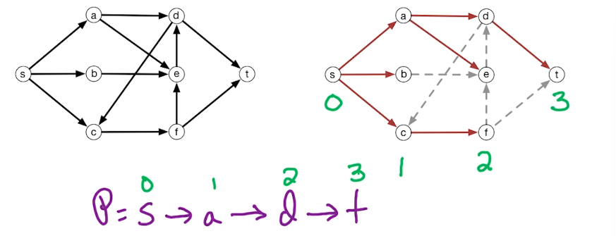

Week 7 — Edmonds-Karp
2026-06-29 → 07-05 (Withdrawal deadline 07-05) · Module MF4 (Edmonds-Karp)
◀ W06 Max-Flow · All weeks · Index · W08 NP ▶
EXAM 2 this week
| Opens | Thu 07-02 10am ET |
| Closes | Mon 07-06 8am ET |
| Covers | Weeks 4–7 — DP3, GR1–GR3, MF1–MF2, MF4 |
Watch the lecture (Edmonds-Karp)
Learning objectives
- Explain Edmonds-Karp as Ford-Fulkerson with one rule: pick the shortest augmenting path.
- State the strongly-polynomial O(m2n) runtime and why it's independent of capacities.
- Sketch why shortest augmenting paths bound the number of augmentations.
Core concepts
The one change from Ford-Fulkerson
Definition. Edmonds-Karp is Ford-Fulkerson where each augmenting path is chosen as a shortest (fewest-edges) s → t path in the residual graph, found by BFS.
Intuition: arbitrary path choice (plain Ford-Fulkerson) can take a huge number of tiny augmentations when capacities are large; always taking the shortest path forces steady, bounded progress that doesn't depend on the capacity values at all.
Strongly vs pseudo polynomial
- Pseudo-polynomial (Ford-Fulkerson, O(mC)): runtime depends on the magnitude of the numbers (C = max-flow value).
- Strongly polynomial (Edmonds-Karp, O(m2n)): runtime depends only on the size of the graph (n, m), never on capacity magnitudes.
Algorithms
Edmonds-Karp — O(m2n)
- Start with zero flow; build residual graph Gf.
- BFS from s to t in Gf to find a shortest augmenting path.
- Push the bottleneck along it; update Gf (forward −, backward + as usual).
- Repeat until BFS finds no s → t path. Current flow is maximum.
Each BFS costs O(m); there are O(mn) augmentations (see below) → O(m2n) total.
| Augmenting path | Runtime | Depends on capacities? | |
|---|---|---|---|
| Ford-Fulkerson (W6) | any s–t path (e.g. DFS) | O(mC) | yes (pseudo-polynomial) |
| Edmonds-Karp (W7) | shortest via BFS | O(m2n) | no (strongly polynomial) |
Key theorems & results
Augmentation bound — O(mn)
Why shortest paths help. Two facts drive the bound:
- Monotone distances. The BFS distance distf(s, v) is non-decreasing across augmentations for every vertex v (a shortest-path augmentation never shortens any distance).
- Bounded saturations. Each edge can be the bottleneck (saturated) at most O(n) times, because between two saturations of the same edge the relevant BFS distance must strictly increase by ≥ 2, and distances range over 0..n.
With m edges each saturated O(n) times, there are O(mn) augmentations; each BFS is O(m), giving O(m) × O(mn) = O(m2n).
Worked example (where Ford-Fulkerson is slow)
Classic "anti-Ford-Fulkerson" graph: two parallel high-capacity paths bridged by a capacity-1 middle edge. Plain Ford-Fulkerson, if it keeps choosing the bridge, augments 2C times (once per unit). Edmonds-Karp's BFS ignores the bridge as a longer route and finishes in a constant number of augmentations — independent of C. This is the canonical motivation for BFS.
Common pitfalls / exam traps
- Saying Edmonds-Karp is "faster because BFS is faster than DFS" — wrong reason. BFS gives shortest paths, which bounds the number of augmentations.
- Confusing the bounds: Ford-Fulkerson O(mC) vs Edmonds-Karp O(m2n).
- Thinking the algorithm or theorem changes — only the path-selection rule changes; the residual mechanics and max-flow/min-cut theorem are identical to W6.
How to answer (HW / exam)
Same black-box rule as W6: reduce to max-flow; when runtime matters, choose Edmonds-Karp for the strongly-polynomial O(m2n) bound. See black boxes.
Go deeper — readings · guidance
Comprehensive Notes
MF4 — Edmonds-Karp Algorithm
Previously we examined the Ford-Fulkerson algorithm; here we turn to the Edmonds-Karp algorithm. Key take-aways from each:
- Ford-Fulkerson
- finds augmenting paths using either DFS or BFS
- runtime: O(mC) where C = size of the max flow
- assumes integer capacities
- Edmonds-Karp
- finds augmenting paths using BFS only
- runtime: O(m2n)
- assumes nothing about capacities
In some ways EK is an implementation of FF, but with a stronger runtime guarantee and relaxed assumptions. As a result their algorithms are highly similar.
Recall — the Ford-Fulkerson algorithm. Input: flow network G = (V, E) with integer capacities c(e) > 0.
- Initialize fe = 0; ∀e ∈ E
- Build residual network Gf
- Check for an s-t path P in Gf (use DFS or BFS) — if no path: return f
- Let c(P) = min capacity along P in Gf
- Augment f by c(P) units along P
- Repeat (goto 2) until no s-t path in Gf
Edmonds-Karp (tweaks in bold). Input: flow network G = (V, E) with capacities c(e) > 0 — integers removed.
- Initialize fe = 0; ∀e ∈ E
- Build residual network Gf
- Check for an s-t path P in Gf (use BFS — DFS removed) — if no path: return f
- Let c(P) = min capacity along P in Gf
- Augment f by c(P) units along P
- Repeat (goto 2) until no s-t path in Gf
Observations
- at least one edge will change in each round/iteration
- we keep augmenting until full capacity is reached along one of the edges
- once full capacity is reached along an edge, it is removed from the residual graph in the next round (others may be removed too, but at least 1 edge is removed each stage)
We want to prove the running time is O(m2n). To do so we show the number of rounds is ≤ mn (also the number of augmentations). Each round calls BFS, which has linear runtime O(m + n); assuming m ≥ n, BFS simplifies to O(m), making the total runtime O(m2n).
In every round the residual graph changes — in particular at least 1 edge is deleted (the one with minimum capacity along the augmenting path), and some may be (re)inserted. This leads to the following lemma.
Lemma. For every edge e, e is deleted and reinserted later ≤ n/2 times.
Since every edge is deleted at most n/2 times and we have m edges, there are at most m ⋅ (n/2) total rounds. This proves the number of rounds is at most mn, and the runtime O(m2n) follows. Now we prove the lemma.
Quick review of BFS properties
- Input: directed graph G = (V, E), start vertex s ∈ V, weights ignored
- Output: dist (v) = min number of edges from s to v, for all v ∈ V
- think of the dist array as a set of levels — each new frontier creates a new level (the min number of edges to that vertex)
- let level(v) = dist (v): the level cannot go up by more than 1 across an edge, and it cannot stay the same nor go down along an edge (going down would imply a shorter path)

The path from s to t found by BFS is the one where the level goes up by 1 at every edge. This is key to the proof: we track how level(z) changes as the residual graph Gf changes.
Consider removing edge a → d in the graph above; the level of d becomes 3, as it is no longer reachable in 2 steps. Inserting an edge will never decrease a level. For every z ∈ V, level(z) does not decrease — it may increase or stay the same, but never decreases. To see why, consider which edges are inserted and removed for an original-flow edge $\overset{\rightarrow}{vw} \in E$ (4 cases):
- Add (vw) to Gf: the flow was full and then reduced (leftover capacity) — a reduction occurs when the back edge was in the augmenting path, (wv) ∈ P.
- Remove (vw) from Gf: the flow reaches capacity — we augmented along the forward edge, (vw) ∈ P.
- Add back edge (wv) to Gf: the flow was empty and we increased flow along the forward edge, (vw) ∈ P.
- Remove back edge (wv) from Gf: the flow was positive and is now empty — flow decreased along the forward edge v → w (sent along the backward edge), so (wv) ∈ P.
Pattern. Adding an edge happens when the opposite edge is on the augmenting path (add (yz) to Gf ⇒ (zy) ∈ P); removing an edge means that edge is on the path (remove (yz) from Gf ⇒ (yz) ∈ P).
Claim. For every z ∈ V, level(z) does not decrease.
A level might decrease only if we add an edge (yz) giving a shorter path (removing an edge cannot). Suppose level(z) = i and we add (yz) to Gf; then the reverse edge is on the augmenting path, (zy) ∈ P, and lies on a BFS path, so BFS gives level(y) = level(z) + 1 = i + 1. Thus level(z) has not decreased despite adding an edge from a higher to a lower level. ▫
Delete/Add effect. Take level(v) = i.
- Delete $\overset{\rightarrow}{vw}$ from Gf: then $\overset{\rightarrow}{vw} \in P$, implying level(w) = level(v) + 1 ≥ i + 1.
- Later add it back: then $\overset{\rightarrow}{wv} \in P$, implying level(v) = level(w) + 1 ≥ i + 2.
So v began at level i; after a remove+reinsert it has increased 2 levels. Levels range from 0 to n, and each delete+insert costs 2 units, so each edge allows at most n/2 (delete+insert) operations. With m edges, this proves there are at most nm rounds in Edmonds-Karp.
DPV chapter exercises
DPV chapter exercises (exact, from the textbook)
Exact end-of-chapter exercises, parsed from the DPV chapter PDFs.
DPV Ch 7 — Linear Programming — open exercises · chapter PDF
Agent hint
Max-flow runtime question → Edmonds-Karp O(m2n) (BFS, capacity-independent) vs Ford-Fulkerson O(mC). Exam 2 (W4–7) opens this week.